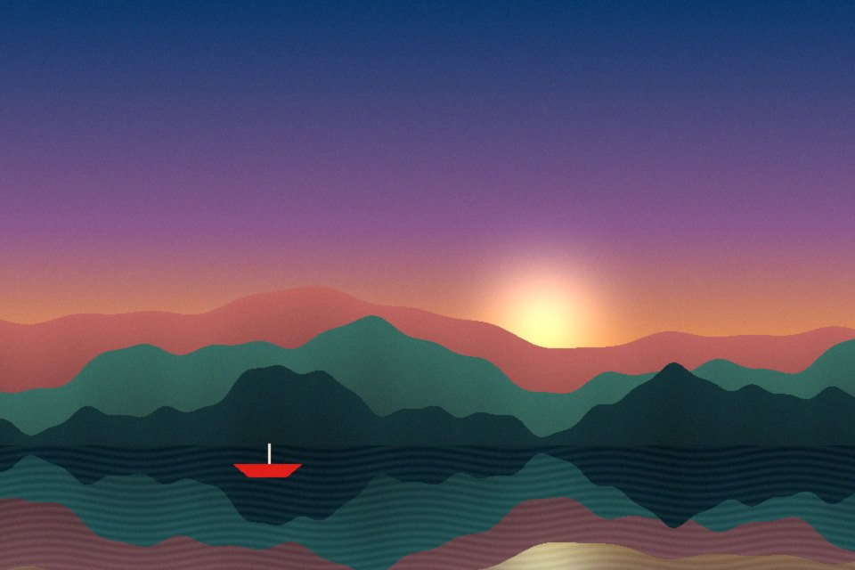

diffmap
A difference cursor with your colors. Move over the sample site: images get the full 8-node map, everything else gets the closest match every browser can render.
Playground, nothing is savedThe cursor needs a mouse or trackpad. You can still build and copy a palette here.
Light, inverted on purpose.
Black text on white is where most sites start. Hover it, then the photo, both color strips and the dark band below.
See the work
Page colors. Plain CSS backgrounds: the closest straight-line match to your nodes.
The same colors as an image. Exactly your nodes.
Light text on dark
Your second section probably looks like this. The cursor uses the same map here.
Get in touch